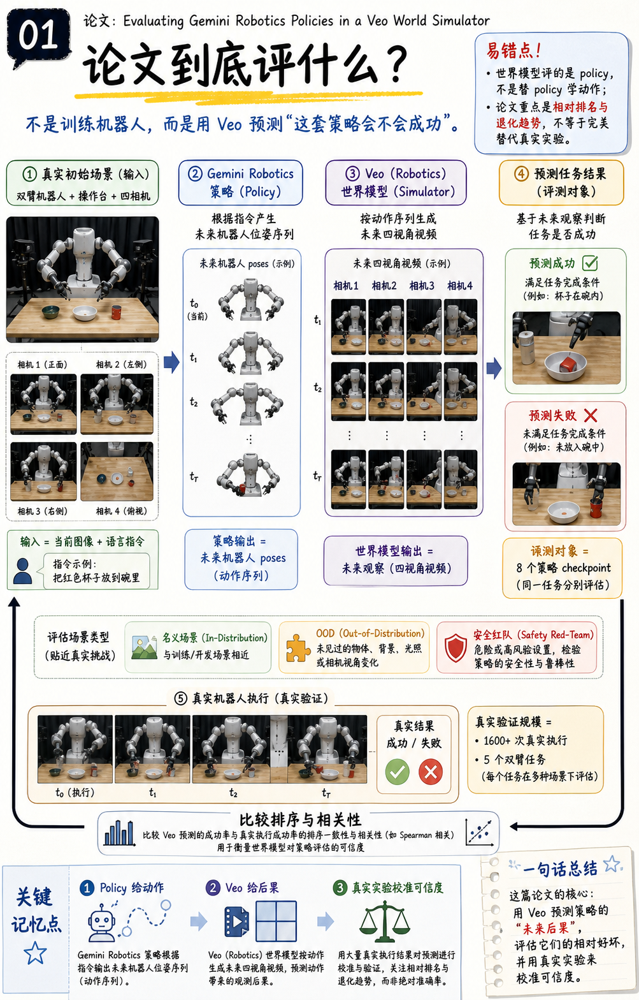

论文到底评什么？
不是训练机器人，而是用 Veo 预测“这套策略会不会成功
这张卡片围绕“论文到底评什么？”展开，先把论文中的对象、流程和证据边界放在同一条阅读线上。核心是把真实场景、指令和策略动作送入生成 rollout，再与真实执行的结果对照；这是一套评测代理，不是策略训练目标。阅读时要把图中的数字、箭头和对象还原成可检查的问题：输入是什么，模型做了什么，输出如何评分，结论又在哪些条件下成立。不要把示意图当成完整实现，也不要把生成结果直接等同于真实机器人执行；世界模型、策略、场景构造和人工评分各自都可能引入误差。复习这张卡时，建议先记住中央机制，再看旁边的指标或案例，最后把‘论文已公开’与‘论文未公开’分开标记，这样既能理解贡献，也能准确描述复现边界。这一步的重点是保持因果链清楚，并在比较时说明参照对象。
Generation record
Status: validated
Size: 1003x1568
DB5D349DEE6AF0E4A45359DE9E66B1F134B75FCCF0EE252694EF7801330AD096生成一张 4:5 竖版中文“图片本身就是学习笔记”的卡片，论文：Evaluating Gemini Robotics Policies in a Veo World Simulator，编号 01。
主标题：论文到底评什么？
副标题：不是训练机器人，而是用 Veo 预测“这套策略会不会成功”。
中央机制图必须贯穿全页：左侧真实初始场景（双臂机器人、操作台、四相机）→ 中间 Gemini Robotics 策略根据指令产生未来机器人位姿序列 → Veo (Robotics) 按动作生成未来四视角视频 → 右侧预测任务成功/失败；下方用一条回扣箭头连接真实机器人执行结果，标注“比较排序与相关性”。
在对应模块旁就地标注：输入=当前图像+语言指令；策略输出=未来机器人 poses；世界模型输出=未来观察；评测对象=8 个策略 checkpoint；真实验证=1600+ 次、5 个双臂任务。用三个贴近主图的小标签区分“名义场景 / OOD / 安全红队”。
必须有易错点：世界模型评的是 policy，不是替 policy 学动作；论文重点是相对排名与退化趋势，不等于完美替代真实实验。
必须有关键记忆点：Policy 给动作，Veo 给后果，真实实验校准可信度。
中文术语准确，数字与箭头方向准确。不要画 DiT、loss、guidance、扩散公式，因为论文未公开这些细节。不要通用科技背景，不要底部另贴大段说明；所有说明贴近被解释对象。视觉遵循给定 v3 模板：清晰学习笔记感、细节丰富、信息密度高但可读，非营销海报。